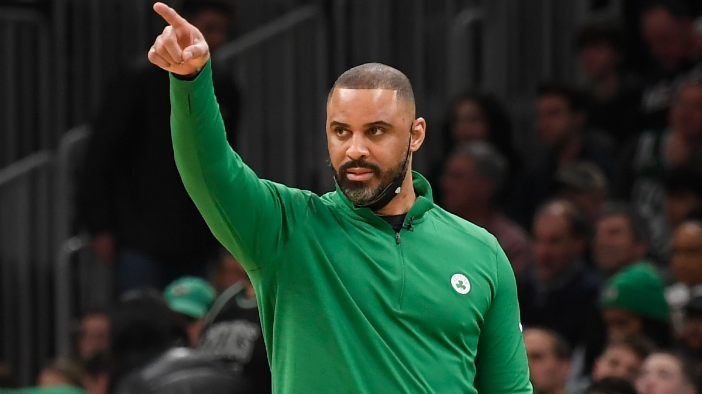
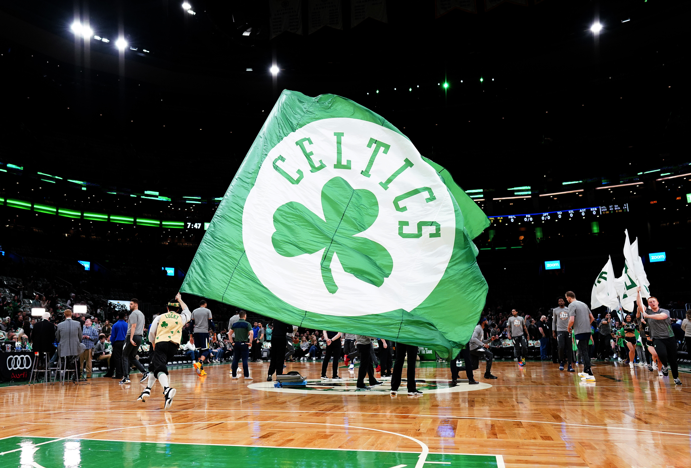
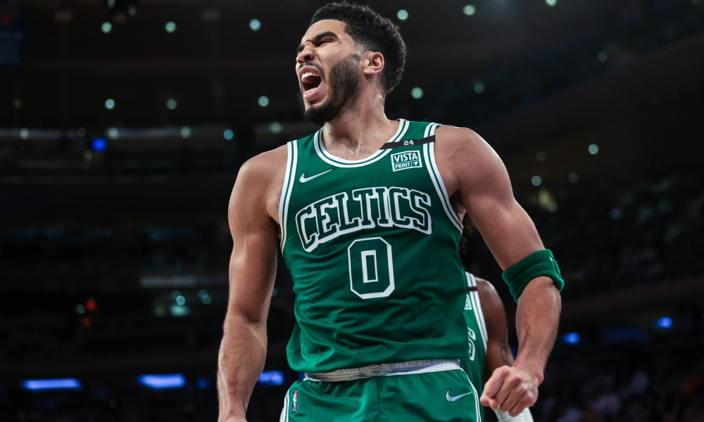

The Celtics executed one of the most dramatic turnarounds in Boston sports history. Will it bring them banner No. 18?
April 16, 2022
Marcus Smart (left), Jayson Tatum (middle), and Jaylen Brown (right), have been huge contributors for the Boston Celtics. (Source: Bleacher Report)
Late Celtics patriarch Red Auerbach famously used to light up a cigar to signify victory was at hand. His contemporary Celtic descendants looked like their championship aspirations had gone up in smoke. Then they lifted their haze — and expectations — catching fire to light up the NBA like one of Red’s Hoyo de Monterreys over the last 11 weeks.
It represents one of the most drastic and dramatic in-season U-turns of fortune in Boston sports history. Not even the truest of Boston basketball true believers could have foreseen this after 47 games: The Celtics resurrecting the season and beginning their pursuit of Banner No. 18 on Sunday at TD Garden as the second seed in the Eastern Conference, hosting the Brooklyn Nets.
The Green awoke in Washington Jan. 23 with a 23-24 record and in 10th place in the East. From that day on, they have been the best team in the NBA, playing .800 basketball (28-7) and outscoring opponents by an average of 15 points per game to rocket up the standings. They turned roughly 60 percent of their 82-game season into nothing more than parquet prologue in a Tale of Two Seasons.
Of course, great Celtics teams aren’t defined by what they do in the regular season. We know that. The Celtics hang banners — 17 of them — for one thing and one thing only, championships. But three months ago you would’ve been put on the first train out of North Station if you mentioned Celtics and championship in the same sentence, rightfully so. Now, they’re legitimate candidates to reach the NBA Finals and author one of those magical and memorable seasons like the 2001 Patriots or the 2004 Red Sox.
“We’ve done what we’ve done over this stretch. That’s not a fluke to play at that high level,” said first-year Celtics coach Ime Udoka. “The consistency that we’ve shown, and playing against some really tough competition . . . really battle-tested us.”
Celtics head coach Ime Udoka. (Source: NESN)
Former Patriots coach and football philosopher Bill Parcells famously uttered, “You are what your record says you are.” With the Celtics, which record do you go by, 23-24 or 28-7?
Their internal metrics and analytics point toward the latter. It’s difficult to doubt them now.
Those glass-half-green projections were a beacon of light during the dark times of the season’s first three-plus months when there was chatter about breaking up their core and separating 25-and-under All-Stars Jayson Tatum and Jaylen Brown because they weren’t a compatible couple as cornerstones.
"I've just enjoyed watching us. This is the basketball that I love to watch."
-Celtics president of basketball operations Brad Stevens
Celtics president of basketball operations Brad Stevens, who bumped up from the bench to take over for Danny Ainge, the only architect the ownership group headed by Wyc Grousbeck and Steve Pagliuca had ever employed, felt injuries and other factors were obscuring the real team.
Ironically, for a team with a mascot named Lucky and a shamrock motif, basketball operations also believed some plain old bad luck was to blame, too, for the team thudding like one of the dead spots on the old Boston Garden parquet.
The Celtics mascot, Lucky the lepracauhn, waves a flag across the TD Garden court. (Source: Fansided)
“I would say we were definitely outside the mix, but probably better than certainly what we were talked about,” said Stevens. “Just because all of our numbers suggested that we were having a below-average shooting year, and we had never been healthy.
“So, as much as it felt like this was a long-term malaise, I just felt like we never got a shot to see what was real. And, maybe what’s real wasn’t going to turn out to be good enough. We were always encouraged with good health and a good little stretch that we could really find a rhythm with this group.”
Defense has been Boston’s calling card. The Celtics allowed the fewest points per game (104.5). But it took longer to get buy-in on the offensive end. Since Jan. 23, the team’s offensive rating — points scored per 100 possessions — was the best in the league at 120.2. Their net rating -- average scoring differential per game -- for the entire season was 7.4, just one-tenth behind the Phoenix Suns, who finished with the NBA's best record.
Tatum and Brown have clicked as a duo and trust their teammates. The ball no longer sticks for stretches like flypaper. The aesthetic value of the team’s play has improved along with its results.
“Kind of one of the things that we really wanted to be was a team that Boston could rally around,” said Stevens. “The best teams that I’ve ever had a chance to be a part of always had an unselfishness and a toughness that were just unique. And I think that we sure at times didn’t look like a fun team to watch early on, but, man, I guess that’s when I knew it turned for me. I’ve just enjoyed watching us. This is the basketball that I love to watch.”
Celtics forward Jayson Tatum. (Source: USA Today)
Rather than blow up the team, Stevens doubled down on his core of Tatum, Brown, and polarizing point guard Marcus Smart, who is silencing doubters (raises hand) with the best season of his career.
At the NBA trade deadline Feb. 10, Stevens shipped out seven players and a first-round pick to buttress the supporting cast with point guard Derrick White and center Daniel Theis.
The Celtics took the hard road. Fittingly, their playoff path isn’t easy either. Usually, the reward for a No. 2 seed is a matchup against an inferior team at No. 7.
Nope.
Brooklyn began the season as a title favorite. The Nets feature two of the most dynamic players in the NBA, both with championships on their CVs in former MVP Kevin Durant and ex-Celtic Kyrie Irving.
“It’s exciting. Those are two of the best offensive players to touch a ball in NBA history, if you ask certain people,” said Brown. “It’s a great challenge, and it’s something that we’re looking forward to, for sure.”
"To be in this position, it’s a testament to our group really locking in and understanding how we really needed to play."
-Celtics forward Al Horford
The Nets are the bizarro Celtics.
On the same day the Celtics started their renaissance, the Nets were atop the East with a 29-16 mark. They would finish 44-38 in a tumultuous season that saw them dissolve their Big Three by dealing James Harden and wait until March 27 for the unvaccinated Irving to be eligible to play home games, landing in the play-in tournament where they beat Cleveland to claim the seventh seed.
Old friend Irving, the resident heterodox hoopster, figures to be a lightning rod. He famously reneged on his 2018 preseason pledge to re-sign with the Celtics. Before last year’s first-round series between the teams, won by Brooklyn in five games with Brown hors de hoops, Irving pointed out Boston’s history of racial hostility. It was reinforced by a fan throwing a bottle at Irving as he left the Garden court following Game 4.
Clouding the on-court plot, the Celtics are expected to be without pogo-stick center Robert Williams, a candidate for Defensive Player of the Year. Williams underwent surgery March 30 for a partially torn meniscus in his left knee.
The Celtics are virtually unbeatable when they have their preferred starting five of Williams, Al Horford, Tatum, Brown, and Smart. That quintet boasted a 27-7 record and went 20-2 from Jan. 23 on, outscoring opponents by 27.9 points per outing.
Brooklyn wing Bruce Brown, who hails from Dorchester, already called out the Celtics as susceptible inside without Williams. During their 35-game stretch, the Celtics allowed the fewest points per game in the paint in the NBA (43.3).
Nothing has followed the traditional script for the Celtics, so why should their playoff pursuit be any different?
“I don’t know if mid-January [we thought] this was a possibility,” said Horford. “We would have settled for we just make sure we get to [seed] six or five. To be in this position, it’s a testament to our group really locking in and understanding how we really needed to play.”
The Celtics turned things around. Now, there’s no turning back from the expectations that come with that.